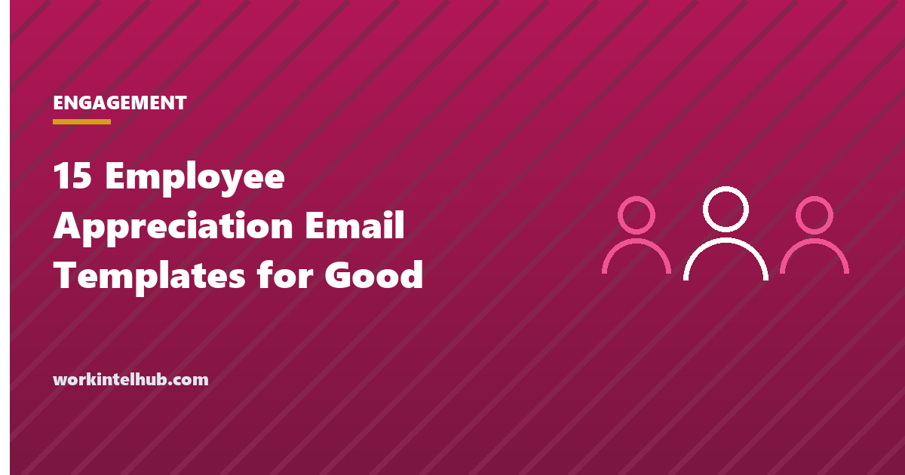

15 Employee Appreciation Email Templates for Good Work

Appreciation that works has two properties: it is specific, naming the thing the person did and what it achieved, and it is prompt, arriving within a day or two of the work. "Great job, team" has neither and is forgotten by lunch. "The section on pricing in your proposal was what won the renewal" is remembered for years. The research on recognition is consistent: specific, timely, sincere recognition from a manager is one of the strongest predictors of engagement and retention, and it costs nothing.
Fifteen templates are here, each built around a specific contribution and an outcome, for the situations managers most often want to recognise and most often fail to: a piece of work, going beyond the role, hitting a target, a difficult situation, helping a colleague, a team project, an anniversary, a peer note, a message from leadership, a remote team member, mentoring, a process improvement, client praise, reliability, and a thank-you with a reward. Replace the brackets; keep the specificity. The Excel sheet is a recognition log, because managers who track it do it more.
Download the templates
Free files: Word, Excel and PDF
Three files, free, no email required. Word to edit, Excel to track, PDF to print or share.
Templates open in Microsoft Word, Excel, Google Docs and Sheets, LibreOffice and any PDF reader. Free to use and adapt for your organisation.
The fifteen situations
| Situation | The line that makes it land |
|---|---|
| A specific piece of work | Name the section that mattered |
| Going beyond the role | Name what they did without being asked |
| Hitting a target | Name the behaviour behind the number |
| Handling a difficult customer or situation | Name how they stayed calm |
| Helping a colleague | Name who they helped and for how long |
| Team thank-you after a project | Name each person's part |
| Work anniversary | Name two contributions |
| Peer to peer | Name the specific help |
| From leadership to an individual | Say you looked yourself |
| Remote team member | Say remote work was seen |
| Mentoring or onboarding a new hire | Quote the new hire |
| Improving a process | Quote the measured effect |
| Client praise passed on | Quote the client |
| Consistent reliability | Give the example of reliability |
| Thank-you with a reward | Name the reward and who arranges it |
Why specific and prompt
Recognition is information: it tells someone which of the hundred things they did last week was the one that mattered. Vague praise carries no information and reads as a formality. Specific praise, delivered within a day or two, is remembered because it is attached to a memory the person already has. The structure in every template is the same: the thing you did, what it achieved, thank you. Nothing about potential, attitude or being a team player, which are judgements of the person rather than recognition of the work.
Frequency matters more than ceremony. A manager who sends two specific notes a week does more for engagement than an annual awards dinner. The recognition log exists because managers who track it discover the people they have not thanked in two months, and they are usually the reliable ones. The recognition ideas guide covers the programmes around this; the emails are the part that costs nothing.
What to leave out
- "But": appreciation followed by feedback is feedback. Send them separately.
- Comparison: "better than the rest of the team" recognises one person by diminishing others.
- Generic adjectives: amazing, awesome, rock star. The specific noun does the work.
- Copying everyone: public recognition suits team achievements; individual notes go to the individual, with a copy to their manager if you are not it.
- Delay: a thank-you three weeks later asks why it took three weeks.
- The engagement ideas and retention strategies guides cover the evidence; the promotion announcement covers the public version.
Key takeaways
- Appreciation works when it is specific (the thing and its outcome) and prompt (within a day or two).
- Every template follows the same structure: what you did, what it achieved, thank you.
- Two specific notes a week beat an annual ceremony; log recognition and find the people you have missed.
- Keep feedback, comparison and generic adjectives out.
Frequently asked questions
How do I write an appreciation email to an employee?
Name the specific thing they did, say what it achieved or prevented, and thank them. Three to five sentences, sent within a day or two of the work. Avoid generic adjectives and do not attach feedback to it.
Should employee appreciation be public or private?
Individual contributions are best recognised privately, with a copy to the employee's manager if the sender is not the manager. Team achievements and milestones suit public recognition. Ask before publicising an individual; some people prefer the note.
How often should managers send appreciation emails?
Often enough that every team member hears something specific at least monthly, which for most teams means two or three notes a week from the manager. The recognition log in the download shows who has not been thanked recently.
Is a thank-you email enough, or should there be a reward?
A specific thank-you is enough for most contributions and is what people remember. Rewards suit exceptional effort or results and should be stated plainly, as in the final template. A reward without the specific thank-you is a transaction.
Can appreciation emails go in the personnel file?
Yes, and they should. Recognition notes support performance reviews, promotion cases and the employee's own record of achievement. Copy them to the file as you send them.